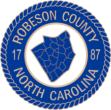
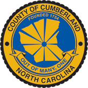

SPARC Regional Hub & Spoke Partnership Model
Southeastern Prevention and Addiction Recovery Resource Center
University of North Carolina at Pembroke • Systems Change Through Evidence-Based Partnerships
 (2).png)

Robeson County
ESTABLISHED PARTNER
- ✓ Agency stipend program with measurable impact
- ✓ Transportation infrastructure development
- ✓ Strong community partnerships

Cumberland County
TECHNICAL HUB
- • Opioid reporting technical assistance
- • Best practices documentation
- • Cross-county process improvement
- • Regional training coordination

Richmond County
EDUCATION
- • RCC workforce recruitment programs
- • Internship capacity building
- • BSW/MSW scholarship pathways
- ⚠ Master's internship site barriers
Scotland County
JUSTICE
- • Drug Treatment Court assistance
- • Grant writing capacity building
- • Intern supervision systems
- ⚠ Severe workforce shortage

Columbus County
PLANNING
- • 4-Year strategic planning (Active)
- • Evidence-based drug court launched
- • Prevention programming initiated
- • Strategic Narcan distribution
Bladen County
DEVELOPING
- • Invited to opioid meetings
- • Initial stakeholder engagement
Systems Change Model: Core Principles
- Upstream Focus: Address root causes rather than symptoms
- Infrastructure Investment: Build sustainable systems
- Evidence-Based Approach: Data-driven decision making
- Regional Coordination: Leverage cross-county resources
Partnership Model Outcomes & Metrics
- 6 County Partnerships (5 active, 1 developing)
- 4+ Evidence-Based Programs Launched
- Workforce Development: Scholarships & internships
- Cross-County Collaboration & resource sharing